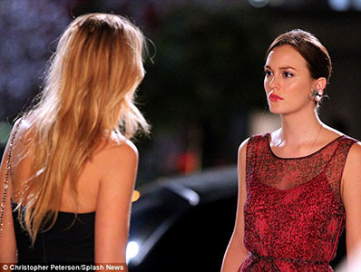
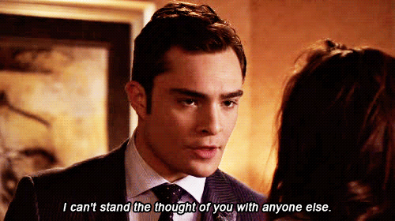
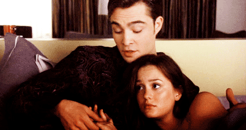
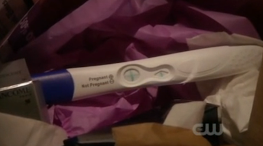
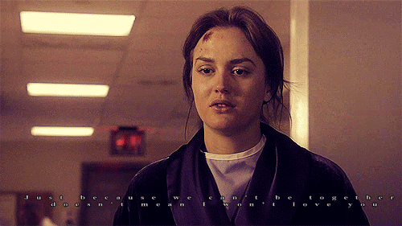
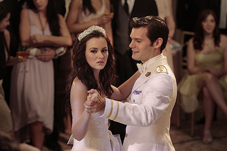
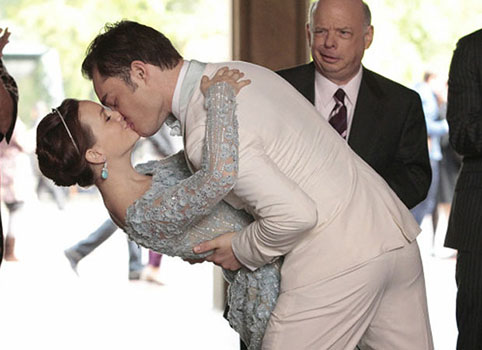

Blair and Serena attempt to mend their broken friendship.
Blair and Chuck get together and adjust to being in a relationship.
Chuck's father dies in a car accident and Blair attempts to be there for him but it puts strain on their relationship.
Chuck realizes he wants Blair back.
Blair and Chuck are in a committed relationship and she begins attending NYU.
Blair gets pregnant and isn't sure if the baby is Louis's or Chuck's.

Blair chooses Chuck over Louis, and then the two of them get into a tragic car accident, causing her to lose the baby and Chuck to be in critical condition.
Chuck recovers and Blair is set to marry Prince Louis.
Blair and Chuck get married and live happily ever after.
